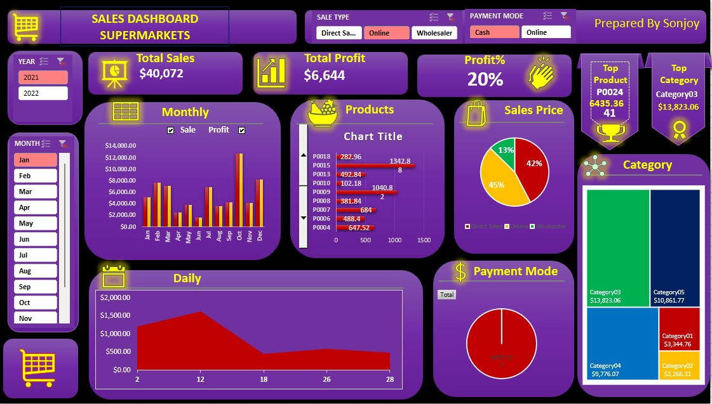
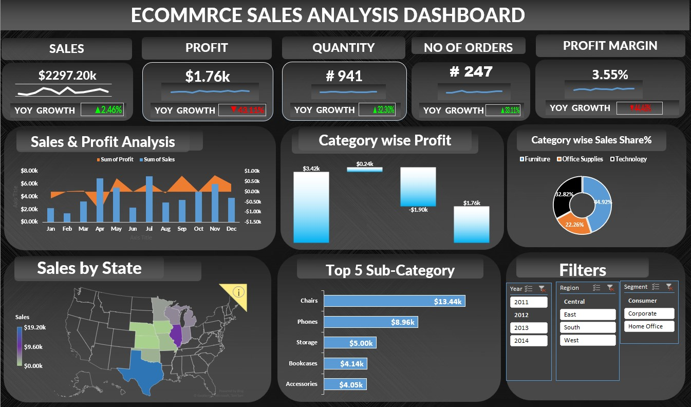
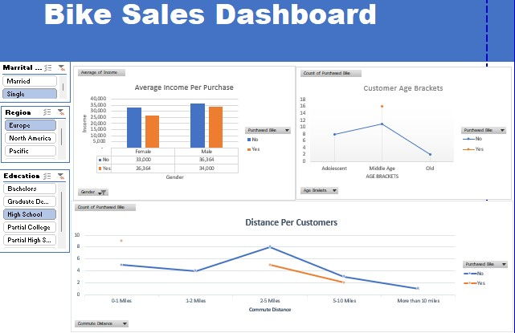

A Sales Dashboard Excel enables businesses to visualise their real-time Sales data and enhance their productivity. In this project, I utilised the various critical Sales KPIs
that I kept in mind when configuring a Sales Dashboard Excel based on my use case. I have utilised a variety of Excel functions and Pivot tables for my project. In addition,
I have utilised the Vlookup, offset, and Rank functions for data cleansing and analysis. Throughout this effort, I've learned a great deal of new vocabulary and functions,
and I've encountered a great deal of difficulty, for which I've turned to YouTube and Google for assistance. It took me four hours to complete this assignment because it
was my first Excel project, which requires a great deal of time. By selecting months and years from slicer, it is possible to view the profit, sales, and overall profit, among other things. THankyou

In this Dynamic ecommarce sales dashboard project, which is the second one of excel that I've worked on, I've been attempting to display the profit, sales, and profit margin based on the year slicer.
In order to create this dashboard, I first used pivot tables in Excel to arrange the data, and then I developed the dashboard itself. This dashboard is fully interactive, and I tried to employ a variety
of various combinations of chart, line, and other sorts of visualisations. I have a map, a bar chart, a slicer, a waterfall, and several more types of charts. After finishing this job,
I have far more confidence than I did before, and I am now able to work on any assignments that come my way. Throughout the course of this project, I've picked up a tonne of new skills
that will ultimately come in handy for another project I'm working on in real life. Thankyou

In this project, I have developed a sales dashboard in Excel to showcase key sales insights and trends. The dashboard includes a comprehensive sales summary and trend analysis based on various factors such as marital status,
region, and education. This project represents my initial foray into Excel projects, and I am actively expanding my skills by exploring new Excel formulas and other criteria.
The sales summary provides an overview of overall sales performance, including metrics such as total revenue, average selling price, and the total number of units sold. This section offers a quick snapshot of the sales data.